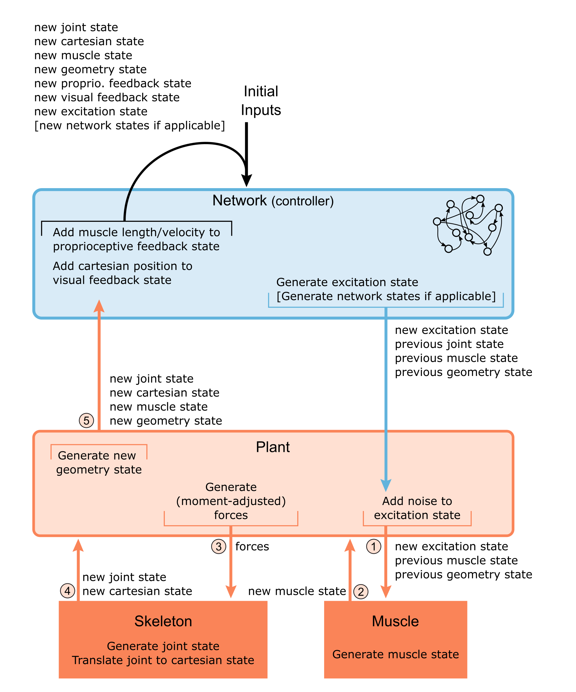

This tutorial goes over the different types of states used in MotorNet, how they flow during simulation, how they are structured and what information they carry.
This illustration summarizes the State flow at runtime and is reproduced here for convenience.
1. Plant States
2. Network States